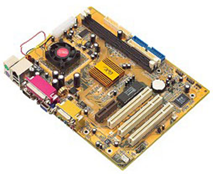

Test a Power Supply 測試電源 <<
Previous Next >> Expansion Slots 擴展插槽
Motherboards and Components 主板和組件
In this lesson, we will cover the purpose and function of the motherboard. We will also cover central processing units (CPUs) and the various technologies that exist to provide specialized functionality for CPUs, such as virtualization, hyperthreading, and multicore processors. Finally, we will cover the various methods of CPU cooling available, such as active and passive heat sinks, as well as liquid cooling.
在本課程中，我們將介紹主板的用途和功能。我們還將介紹中央處理器（CPU）和為CPU提供專門功能的各種技術，例如虛擬化，超線程和多核處理器。最後，我們將介紹可用的各種CPU冷卻方法，例如主動和被動散熱器以及液體冷卻。
Motherboards are the foundation of the computer. The motherboard acts like a city block and the bus is like the streets. The components are like the buildings in the city, so that if you want to go from one building to another (or in our case if we want information to flow from one component to another), it has to travel across the bus (the streets). The bus is what physically connects the various components of the motherboard to each other, allowing information to flow into and out of the various computer components. Motherboards come in a variety of shapes, sizes, and layouts; the specific shape, size, and layout of a motherboard is called its form factor. The motherboard is one of the most important computer components, since every other component plugs into the motherboard, either into a dedicated socket (such as the CPU), an expansion slot (used for various expansion cards), or a connector (such as SATA storage devices and audio inputs/outputs). The motherboard truly is the central meeting point for all the components in the computer.
主板是計算機的基礎。主板就像一個街區，公交車就像街道。這些組件就像城市中的建築物，因此，如果您要從一棟建築物轉到另一棟建築物（或者在我們的情況下，如果我們希望信息從一個組件流向另一組件），則它必須穿越公交車（街道） ）。總線將主板的各個組件物理連接在一起，使信息可以流入和流出各個計算機組件。主板有各種形狀，大小和佈局。主板的特定形狀，大小和佈局稱為其外形尺寸。主板是最重要的計算機組件之一，因為其他所有組件都可以插入主板，無論是插入專用插槽（例如CPU），擴展槽（用於各種擴展卡）還是連接器（例如SATA）存儲設備和音頻輸入/輸出）。主板確實是計算機中所有組件的主要集合點。

Motherboard
Before we begin talking about the motherboard itself, we want to have a basic understanding of the various components that can connect to the motherboard. We will go into detail on each of these components in future lessons, but let’s take a look at some of the key components on a motherboard.
在開始討論主板本身之前，我們希望對可以連接到主板的各種組件有基本的了解。在以後的課程中，我們將詳細介紹這些組件中的每一個，但讓我們看一下主板上的一些關鍵組件。
Test a Power Supply 測試電源 <<
Previous Next >> Expansion Slots 擴展插槽